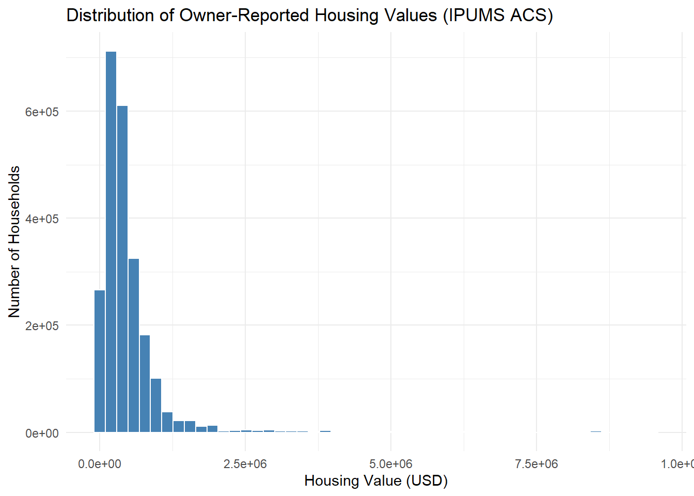
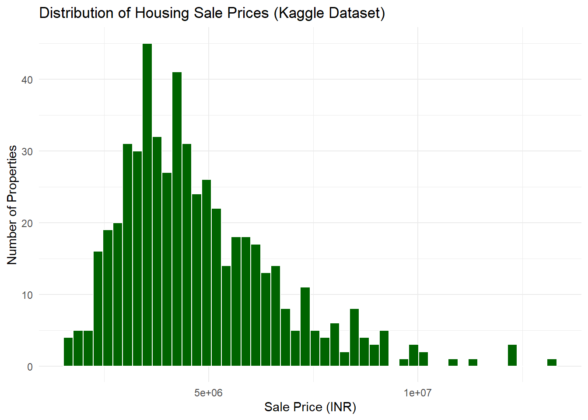

Data
We describe the sources of our data and the cleaning process.

This comes from the file data.qmd.
Data Source
Data Set 1: IPUMS USA (Primary Dataset)
The dataset used in this project comes from IPUMS USA, maintained by the Minnesota Population Center at the University of Minnesota. IPUMS provides harmonized microdata from the U.S. Census and American Community Survey (ACS), enabling consistent analysis across time and population groups.
We use data from the 2023 American Community Survey (ACS, 1-Year Sample), which includes detailed individual and household-level information on demographics, income, and housing characteristics across the United States.
- Data access: IPUMS USA Extract System
- Data provider: Minnesota Population Center, University of Minnesota
- Purpose of collection: To inform public policy, federal resource allocation, and academic research by providing annual data on the U.S. population.
Data Set 2: Housing Prices (Kaggle)
The second dataset used in this project comes from Kaggle, and contains housing sale prices and property-level attributes from a U.S. housing market. It is often used for machine learning and regression exercises, and provides detailed housing features that complement our demographic-based IPUMS data.
This dataset allows us to explore how individual housing characteristics correlate with price, and can be used to contrast market-based housing valuation with self-reported housing values in the ACS data.
- Data access: Kaggle Housing Prices Dataset
- Data provider: Yasser Hatab via Kaggle
- Purpose of collection: To predict housing prices based on physical features of the house, useful for regression, modeling, and comparative analysis with IPUMS-based household-level housing value.
Variable Description
Data Set 1: IPUMS USA (ACS 2023)
We focus on variables relevant to housing and income:
YEAR: Survey year (2023 for all observations).STATEICP: State identifier based on IPUMS codes.ACREHOUS: Lot size where the housing unit is located (1 = less than 10 acres, 2 = 10 acres or more).VALUEH: Estimated market value of owner-occupied housing units (in USD).RACE: Broad race category of the respondent.FTOTINC: Total family income, including all sources (in USD).
Note: The variable
RENTwas removed during data cleaning, as it was nearly always zero and not relevant for our analysis of owner-occupied housing units.
IPUMS Variable Summary Table
| Variable | Description | Values / Notes |
|---|---|---|
| YEAR | Survey year | All are 2023 |
| STATEICP | State code (IPUMS format) | 1–82, e.g., 01 = Connecticut |
| ACREHOUS | Lot size (binary after recoding) | 0 = <10 acres, 1 = ≥10 acres |
| VALUEH | Value of owned home (USD) | Excludes top-coded 9999999 |
| RACE | Broad race category | Integer codes (see below) |
| FTOTINC | Total family income (USD) | Excludes 0 and 9999999 |
We did not rename variables but recoded ACREHOUS into a binary indicator to simplify analysis.
RACE Codes
The RACE variable uses the following codes (abridged):
- 1 = White
- 2 = Black or African American
- 3 = American Indian or Alaska Native
- 4 = Chinese
- 5 = Japanese
- 6 = Other Asian or Pacific Islander
- 8 = Two major races
- 9 = Three or more major races
Data Set 2: Housing Prices (Kaggle)
The second dataset, from Kaggle, focuses on individual housing attributes and sale prices. These variables were used to model and analyze market-driven home values.
Kaggle Variable Summary Table
| Variable | Description | Values / Notes |
|---|---|---|
price |
Sale price of the house | In INR |
area |
Living area of the house | In square feet |
bedrooms |
Number of bedrooms | Integer |
bathrooms |
Number of bathrooms | Integer |
stories |
Number of floors | Integer |
mainroad |
Whether the house is on a main road | 1 = yes, 0 = no |
guestroom |
Presence of a guest room | 1 = yes, 0 = no |
basement |
Presence of a basement | 1 = yes, 0 = no |
hotwaterheating |
Presence of hot water heating | 1 = yes, 0 = no |
airconditioning |
Presence of air conditioning | 1 = yes, 0 = no |
parking |
Number of parking spaces | Integer |
prefarea |
Whether in a preferred area | 1 = yes, 0 = no |
furnishingstatus |
Furnishing level | "furnished", "semi-furnished", "unfurnished" |
All yes/no variables were recoded into binary numeric values during data cleaning.
Data Cleaning
Note: The two datasets were not merged. Each dataset was analyzed separately, as they serve different analytical purposes—IPUMS provides demographic-level insights, while the Kaggle dataset offers property-level pricing data.
Data Set 1: IPUMS USA (ACS 2023)
The IPUMS data cleaning process is documented in our cleaning script. We used dplyr to filter, recode, and remove unnecessary variables from the raw dataset.
The following steps were taken:
- We removed all observations with invalid or topcoded values:
STATEICP > 82(invalid state codes)ACREHOUS == 0(unknown lot size)VALUEH == 9999999andFTOTINC == 9999999(topcoded values)
- We removed unused or uninformative variables:
RENT, which was almost entirely zeros and not relevant to our analysisRACED, a more detailed race variable we chose not to use
- We recoded
ACREHOUSto a binary variable:1(less than 1 acre) was recoded to02(1 acre or more) was recoded to1
The cleaned dataset was saved as an .rds file and is used throughout the analysis.
We used the dplyr package from the tidyverse for all transformations.
Data Set 2: Housing Prices (Kaggle)
The Kaggle housing dataset was cleaned using our cleaning script. This process involved transforming categorical variables and retaining only relevant columns for analysis. The main cleaning steps were:
- Converted categorical yes/no variables to binary numeric values (
1 = yes,0 = no) for:mainroad,guestroom,basement,hotwaterheating,airconditioning,prefarea
- Converted
furnishingstatusinto a categorical factor with three levels:"furnished","semi-furnished", and"unfurnished"
- Selected variables relevant to housing price prediction:
price,area,bedrooms,bathrooms,stories,mainroad,guestroom,basement,hotwaterheating,airconditioning,parking,prefarea,furnishingstatus
The cleaned dataset was saved as second_housing_cleaned.rds and used in all downstream modeling and visualizations.
Visualizing Key Variables
To better understand the structure of each dataset, we visualize the distribution of key numeric variables from both sources.
Data Set 1: Distribution of Self-Reported Housing Value (IPUMS)
The following histogram shows the distribution of housing values reported by respondents in the IPUMS ACS data. These values are self-reported and may reflect owner perception rather than market assessments.
As the plot shows, most owner-reported home values cluster below $500,000. The distribution is heavily right-skewed, with a long tail of higher-value properties—some even exceeding $1 million.
Data Set 2: Distribution of Housing Prices (Kaggle)
This histogram displays the distribution of housing prices in the Kaggle dataset. These are actual sale prices and reflect market transactions rather than survey responses.

This distribution is also right-skewed. Most homes sell between 3 to 7 million INR, but there is a notable number of high-end sales above 10 million INR. The shape of this distribution suggests a heterogeneous housing market, which aligns with expectations for real-world property prices.